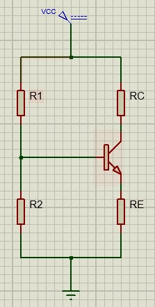

EL TRANSISTOR por DIVISOR DE TENSIÓN (PDT) | 100% EFECTIVO |
Universidad Surcolombiana [Juan Jose Ortiz] [DAVID MURILLO]
El circuito de polarización por divisor de voltaje o de tensión, para un transistor bjt es como se muestra en la siguiente figura.

La polarización por divisor de voltaje es la polarización más estable respecto al punto de trabajo [Q]. Se puede usar en todas las configuraciones del transistor bjt, emisor común, base común, y colector común. Las ecuaciones básicas son las siguientes:
Vbb=Vcc*[R2/(R1+R2)]
Vbb=0.7v+Re+Ie
Ie=[(Vbb-0.7v)/Re]
Vce=Vc-Ve
Ie≈Ic
Ve=Vbb-0.7v
Vc=Vcc-Ic*Rc
Procedimiento para realizar el análisis es:
Calcular la tensión en la base VBB a través del divisor de tensión.
Restar 0.7V para conseguir la tensión de emisor (0.3 para el germanio).
Dividir por la resistencia de emisor para obtener la corriente de emisor.
Suponer que la corriente de colector es aproximadamente igual a la corriente de emisor.
Hallar la tensión de colector a tierra restando la tensión a través de la resistencia de colector a la tensión de alimentación del colector.
Calcular la tensión emisor - colector restándole la tensión de emisor a la de colector.
Para más información puede ver el siguiente video el cual será de gran ayuda para entender más fácilmente el tema visto anteriormente.